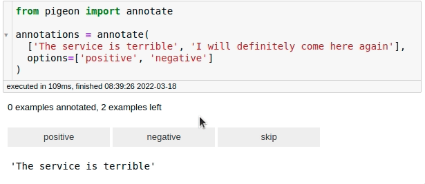

6.1. Feature Extraction#
6.1.1. distfit: Find The Best Theoretical Distribution For Your Data in Python#
Show code cell content
!pip install distfit
If you want to find the best theoretical distribution for your data in Python, try distfit.
import numpy as np
from distfit import distfit
X = np.random.normal(0, 3, 1000)
# Initialize model
dist = distfit()
# Find best theoretical distribution for empirical data X
distribution = dist.fit_transform(X)
dist.plot()
[distfit] >fit..
[distfit] >transform..
[distfit] >[norm ] [0.00 sec] [RSS: 0.0037316] [loc=-0.018 scale=2.999]
[distfit] >[expon ] [0.00 sec] [RSS: 0.1588997] [loc=-14.019 scale=14.001]
[distfit] >[dweibull ] [0.00 sec] [RSS: 0.0079433] [loc=-0.012 scale=2.529]
[distfit] >[t ] [0.02 sec] [RSS: 0.0036884] [loc=-0.012 scale=2.873]
[distfit] >[genextreme] [0.07 sec] [RSS: 0.0049831] [loc=-1.132 scale=3.037]
[distfit] >[gamma ] [0.04 sec] [RSS: 0.0038504] [loc=-101.098 scale=0.089]
[distfit] >[lognorm ] [0.09 sec] [RSS: 0.0037897] [loc=-237.099 scale=237.056]
[distfit] >[uniform ] [0.00 sec] [RSS: 0.1145382] [loc=-14.019 scale=24.469]
[distfit] >[loggamma ] [0.04 sec] [RSS: 0.0036960] [loc=-239.858 scale=44.472]
[distfit] >Compute confidence interval [parametric]
[distfit] >plot..

(<Figure size 1000x800 with 1 Axes>,
<AxesSubplot:title={'center':'\nt\ndf=24.44, loc=-0.01, scale=2.87'}, xlabel='Values', ylabel='Frequency'>)
Besides finding the best theoretical distribution, distfit is also useful in detecting outliers. New data points that deviate significantly can then be marked as outliers.
6.1.2. Geopy: Extract Location Based on Python String#
Show code cell content
!pip install geopy
If you work with location data, you might want to visualize them on the map. Geopy makes it easy to locate the coordinates of addresses across the globe based on a Python string.
from geopy.geocoders import Nominatim
geolocator = Nominatim(user_agent="find_location")
location = geolocator.geocode("30 North Circle Drive")
After defining the app name and insert location, all you need to exact information about the location is to use location.address.
location
Location(30, North Circle Drive, Dogwood Acres, Chapel Hill, Orange County, North Carolina, 27516, United States, (35.8796631, -79.0770546, 0.0))
location.address
'30, North Circle Drive, Dogwood Acres, Chapel Hill, Orange County, North Carolina, 27516, United States'
To extract the latitude and longitude or the use location.latitide, location.longitude.
location.latitude, location.longitude
(35.8796631, -79.0770546)
6.1.3. fastai’s cont_cat_split: Get a DataFrame’s Continuous and Categorical Variables Based on Their Cardinality#
Show code cell content
!pip install fastai
To get a DataFrame’s continuous and categorical variables based on their cardinality, use fastai’s cont_cat_split method.
If a column consists of integers, but its cardinality is smaller than the max_card parameter, it is considered as a category variable.
import pandas as pd
from fastai.tabular.core import cont_cat_split
df = pd.DataFrame(
{
"col1": [1, 2, 3, 4, 5],
"col2": ["a", "b", "c", "d", "e"],
"col3": [1.0, 2.0, 3.0, 4.0, 5.0],
}
)
cont_names, cat_names = cont_cat_split(df)
print("Continuous columns:", cont_names)
print("Categorical columns:", cat_names)
Continuous columns: ['col3']
Categorical columns: ['col1', 'col2']
cont_names, cat_names = cont_cat_split(df, max_card=3)
print("Continuous columns:", cont_names)
print("Categorical columns:", cat_names)
Continuous columns: ['col1', 'col3']
Categorical columns: ['col2']
6.1.4. Patsy: Build Features with Arbitrary Python Code#
Show code cell content
!pip install patsy
If you want to quickly experiment with different combinations of features, try Patsy. Patsy allows you to create features for your model using human-readable syntax.
from sklearn.datasets import load_wine
import pandas as pd
df = load_wine(as_frame=True)
data = pd.concat([df['data'], df['target']], axis=1)
data.head(10)
| alcohol | malic_acid | ash | alcalinity_of_ash | magnesium | total_phenols | flavanoids | nonflavanoid_phenols | proanthocyanins | color_intensity | hue | od280/od315_of_diluted_wines | proline | target | |
|---|---|---|---|---|---|---|---|---|---|---|---|---|---|---|
| 0 | 14.23 | 1.71 | 2.43 | 15.6 | 127.0 | 2.80 | 3.06 | 0.28 | 2.29 | 5.64 | 1.04 | 3.92 | 1065.0 | 0 |
| 1 | 13.20 | 1.78 | 2.14 | 11.2 | 100.0 | 2.65 | 2.76 | 0.26 | 1.28 | 4.38 | 1.05 | 3.40 | 1050.0 | 0 |
| 2 | 13.16 | 2.36 | 2.67 | 18.6 | 101.0 | 2.80 | 3.24 | 0.30 | 2.81 | 5.68 | 1.03 | 3.17 | 1185.0 | 0 |
| 3 | 14.37 | 1.95 | 2.50 | 16.8 | 113.0 | 3.85 | 3.49 | 0.24 | 2.18 | 7.80 | 0.86 | 3.45 | 1480.0 | 0 |
| 4 | 13.24 | 2.59 | 2.87 | 21.0 | 118.0 | 2.80 | 2.69 | 0.39 | 1.82 | 4.32 | 1.04 | 2.93 | 735.0 | 0 |
| 5 | 14.20 | 1.76 | 2.45 | 15.2 | 112.0 | 3.27 | 3.39 | 0.34 | 1.97 | 6.75 | 1.05 | 2.85 | 1450.0 | 0 |
| 6 | 14.39 | 1.87 | 2.45 | 14.6 | 96.0 | 2.50 | 2.52 | 0.30 | 1.98 | 5.25 | 1.02 | 3.58 | 1290.0 | 0 |
| 7 | 14.06 | 2.15 | 2.61 | 17.6 | 121.0 | 2.60 | 2.51 | 0.31 | 1.25 | 5.05 | 1.06 | 3.58 | 1295.0 | 0 |
| 8 | 14.83 | 1.64 | 2.17 | 14.0 | 97.0 | 2.80 | 2.98 | 0.29 | 1.98 | 5.20 | 1.08 | 2.85 | 1045.0 | 0 |
| 9 | 13.86 | 1.35 | 2.27 | 16.0 | 98.0 | 2.98 | 3.15 | 0.22 | 1.85 | 7.22 | 1.01 | 3.55 | 1045.0 | 0 |
from patsy import dmatrices
y, X = dmatrices('target ~ alcohol + flavanoids + proline', data=data)
X
DesignMatrix with shape (178, 4)
Intercept alcohol flavanoids proline
1 14.23 3.06 1065
1 13.20 2.76 1050
1 13.16 3.24 1185
1 14.37 3.49 1480
1 13.24 2.69 735
1 14.20 3.39 1450
1 14.39 2.52 1290
1 14.06 2.51 1295
1 14.83 2.98 1045
1 13.86 3.15 1045
1 14.10 3.32 1510
1 14.12 2.43 1280
1 13.75 2.76 1320
1 14.75 3.69 1150
1 14.38 3.64 1547
1 13.63 2.91 1310
1 14.30 3.14 1280
1 13.83 3.40 1130
1 14.19 3.93 1680
1 13.64 3.03 845
1 14.06 3.17 780
1 12.93 2.41 770
1 13.71 2.88 1035
1 12.85 2.37 1015
1 13.50 2.61 845
1 13.05 2.68 830
1 13.39 2.94 1195
1 13.30 2.19 1285
1 13.87 2.97 915
1 14.02 2.33 1035
[148 rows omitted]
Terms:
'Intercept' (column 0)
'alcohol' (column 1)
'flavanoids' (column 2)
'proline' (column 3)
(to view full data, use np.asarray(this_obj))
The features created by Patsy could be easily used by popular machine learning libraries like scikit-learn.
from sklearn.linear_model import LinearRegression
model = LinearRegression().fit(X, y)
6.1.5. yarl: Create and Extract Elements from a URL Using Python#
Show code cell content
!pip install yarl
If you want to easily extract elements from a URL using Python, try yarl. In the code below, I use yarl to extract different elements of the URL search.
from yarl import URL
url = URL('https://github.com/search?q=data+science')
url
URL('https://github.com/search?q=data+science')
print(url.host)
github.com
print(url.path)
/search
print(url.query_string)
q=data science
With yarl, you can also build a URL using information such as scheme, host, port, path, query, fragment, etc.
# Create a URL
url = URL.build(
scheme="https",
host="github.com",
path="/search",
query={"p": 2, "q": "data science"},
)
print(url)
https://github.com/search?p=2&q=data+science
# Replace the query
print(url.with_query({"q": "python"}))
https://github.com/search?q=python
# Replace the path
new_path = url.with_path("khuyentran1401/Data-science")
print(new_path)
https://github.com/khuyentran1401/Data-science
# Update the fragment
print(new_path.with_fragment("contents"))
https://github.com/khuyentran1401/Data-science#contents
6.1.6. Pigeon: Quickly Annotate Your Data on Jupyter Notebook#
Show code cell content
!pip install pigeon-jupyter
Sometimes, your training data is unlabeled. If you want to quickly annotate your data within your Jupyter Notebook, use Pigeon. With, Pigeon, you can label data by simply clicking the label.
from pigeon import annotate
annotations = annotate(
["The service is terrible", "I will definitely come here again"],
options=["positive", "negative"],
)
annotations
[('The service is terrible', 'negative'),
('I will definitely come here again', 'positive')]

After labeling all your data, you can get the examples along with their labels by calling annotations.
6.1.7. probablepeople: Parse Unstructured Names Into Structured Components#
Show code cell content
!pip install probablepeople
If you want to parse unstructured names of companies or people into name components, try probablepeople.
import probablepeople as pp
pp.parse("Mr. Owen Harris II")
[('Mr.', 'PrefixMarital'),
('Owen', 'GivenName'),
('Harris', 'Surname'),
('II', 'SuffixGenerational')]
pp.parse("Kate & John Cumings")
[('Kate', 'GivenName'),
('&', 'And'),
('John', 'GivenName'),
('Cumings', 'Surname')]
pp.parse("Prefect Technologies, Inc")
[('Prefect', 'CorporationName'),
('Technologies,', 'CorporationName'),
('Inc', 'CorporationLegalType')]
6.1.8. Supercharge PDF Text Extraction in Python with pypdf#
Show code cell content
!pip install -U pypdf
PDF text is designed for beautiful on-screen display rather than optimized structured data extraction, making text extraction from PDFs challenging.
Besides simple text extraction, pypdf also knows about fonts, encodings, and typical character distance, which enhances the accuracy of text extraction from PDFs.
from pypdf import PdfReader
reader = PdfReader("example.pdf")
page = reader.pages[0]
text = page.extract_text()